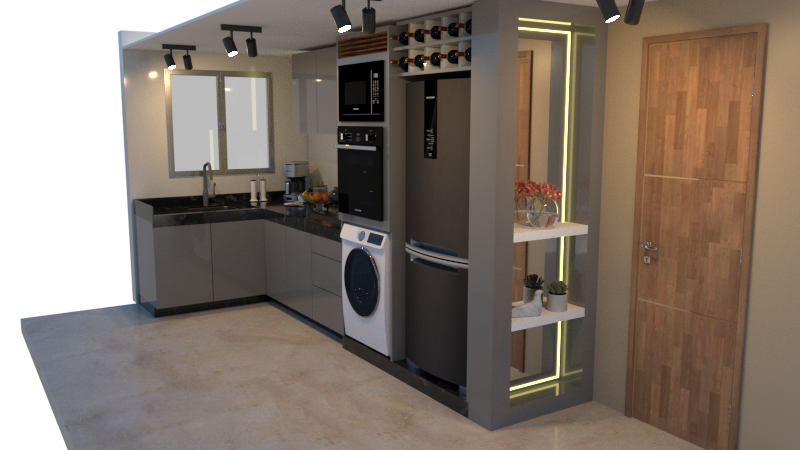

Objetivo
Reformar a cozinha para criar um ambiente moderno, funcional e acolhedor, otimizando o espaço e a circulação.
Metodologia e solução adotada
- Bancada em "L" e torre quente para fornos e micro-ondas em altura ergonômica.
- Materiais:
- bancadas em mármore preto;
- armários em MDF cinza com detalhes em madeira;
- porcelanato de grande formato.
- Iluminação com LED embutido e eletrodomésticos embutidos com coifa.
- Detalhamento de marcenaria com notas para a execução, por exemplo:
- conferir as medidas do forno e do micro-ondas antes do corte;
- prever furo para o gás;
- prever pontos de energia.
Resultados
Projeto executivo com 12 folhas:
- perspectivas 3D;
- planta 1:20 e planta de roda-base;
- vistas cotadas;
- detalhamento de marcenaria (1:10 e 1:20).
 |
A capa do documento original foi omitida porque continha dados do cliente.